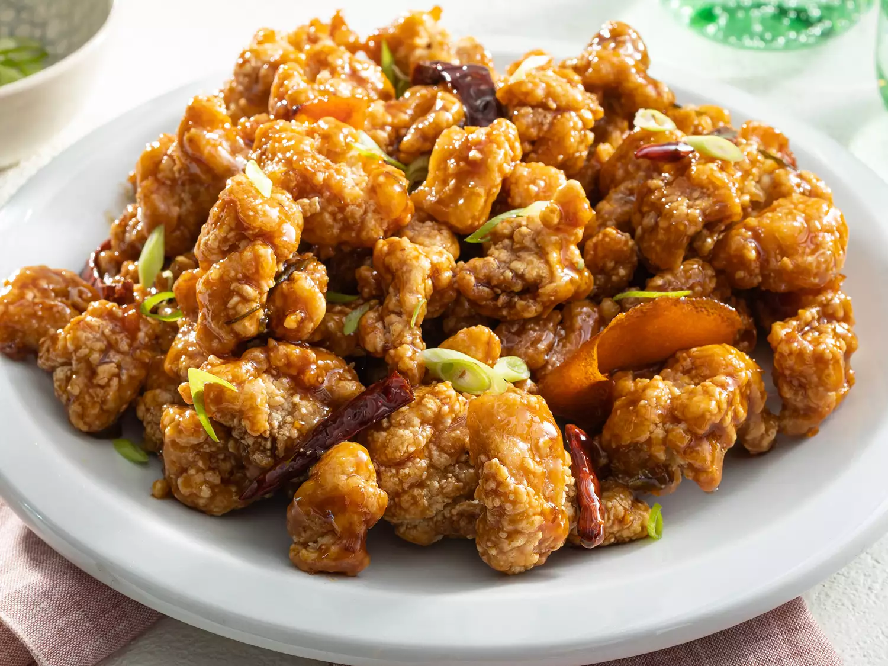

Tsaos Chicken

Description
Tso's chicken is crispy, twice-fried chicken in a deliciously sweet and sticky glaze. This mouthwatering dish delivers a combination of Asian flavors that will knock your chopsticks off! Serve with steamed broccoli and white rice and garnish with sliced green onions.
Looking for tangy, spicy, and savory flavors all found in one dish? This top-rated recipe for General Tso's chicken combines crispy, flash-fried chicken and a rich garlic-chile sauce that turns up the heat. Creating a uniquely flavorful weeknight meal has never been easier — try ChefDaddy's 5-star recipe for a mouthwatering plate of General Tso's chicken any time.
Ingredients
Chicken:
- 4 cups vegetable oil for frying
- 1 large egg
- 1 ½ pounds skinless, boneless chicken thighs, cut into 1 1/2-inch pieces
- 1 teaspoon salt
- 1 teaspoon white sugar
- 1 pinch white pepper
- 1 cup cornstarch
Sauce:
- 2 tablespoons vegetable oil
- 3 tablespoons chopped green onion
- 1 clove garlic, minced
- 6 dried whole red chilies
- 1 strip orange zest
- ½ cup white sugar
- ¼ cup soy sauce
- 3 tablespoons chicken broth
- 2 tablespoons peanut oil
- 1 tablespoon rice vinegar
- 2 teaspoons sesame oil
- ¼ teaspoon ground ginger
- 2 teaspoons cornstarch
- ¼ cup water
Steps
- Begin by coating and frying chicken thigh pieces until they are golden brown and begin to float.
- Fry in batches, then set chicken aside.
- Repeat the process for an extra crispy, double-fried result.
- Drain the chicken on a towel-lined plate.
- Make the sauce, then toss with the fried chicken until it absorbs some of the sauce.